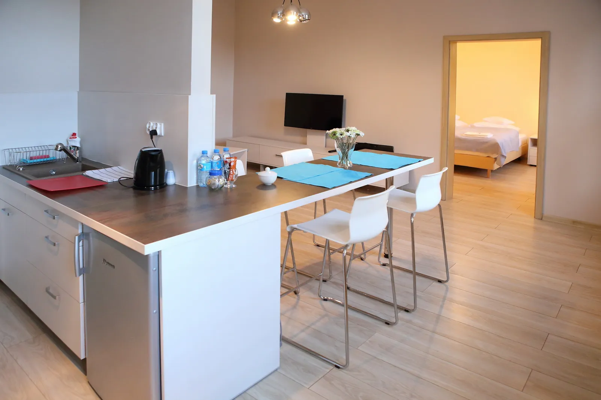
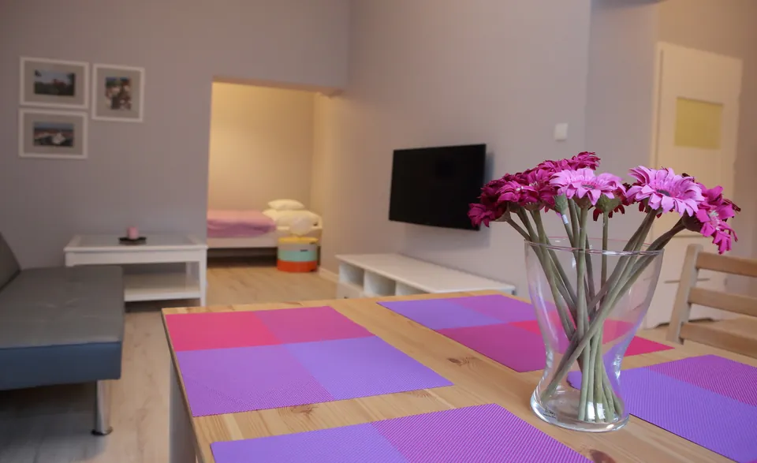
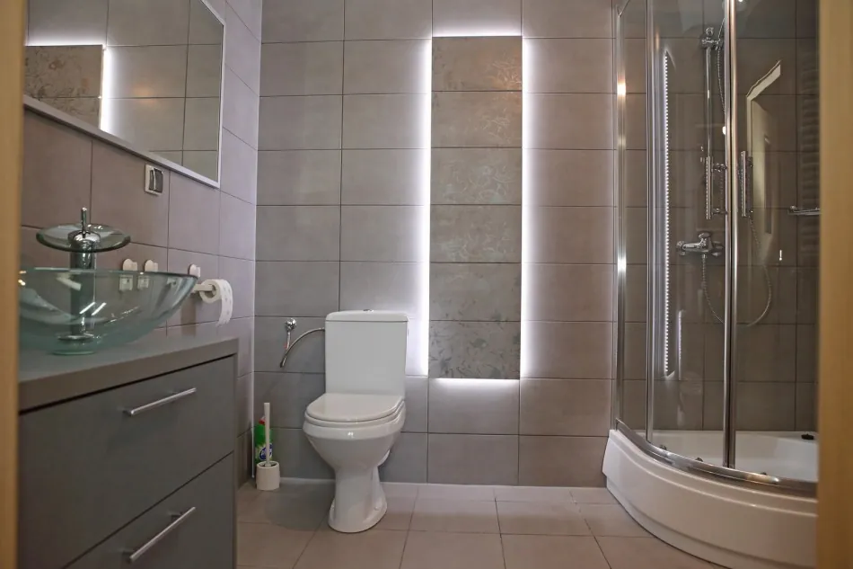
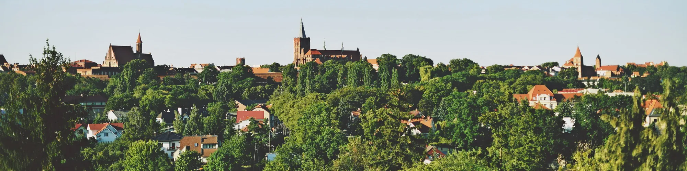
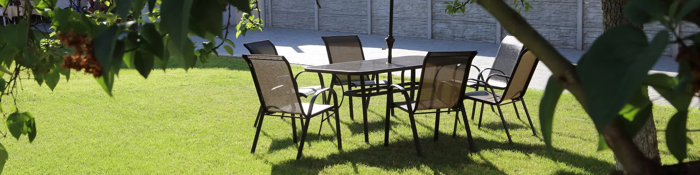

ul. Rybacka 3, 15 m od Rynku
Apartamenty w sercu Chełmna
Trzy apartamenty z kuchnią w odnowionej kamienicy na Starym Mieście. Zamknięty parking, ogród na podwórzu i Rynek tuż za rogiem.
Zapytaj o terminBooking.com 9,4/10Google 4,8/5
Trzy apartamenty dla 1 do 5 osób
Każdy ma kuchnię, łazienkę z prysznicem i część wypoczynkową. Lawendowy jest na parterze, Cappuccino i Błękitny na pierwszym piętrze.

Lawendowy
Kuchnia, łazienka i pokój dzienny z sofą oraz aneksem sypialnianym.
od 140 zł / doba
Zobacz
Cappuccino
Kuchnia, łazienka, pokój dzienny z kanapą i osobna sypialnia.
od 180 zł / doba
Zobacz
Błękitny
Pokój dzienny z aneksem kuchennym, łazienka i sypialnia z trzema łóżkami.
od 180 zł / doba
Zobacz


W każdym apartamencie
- Kuchnia: lodówka, mikrofalówka, podwójna płyta indukcyjna, czajnik i naczynia
- Stół dla czterech osób - do posiłków albo do pracy
- Sofa, stolik i telewizor w części wypoczynkowej
- Łazienka z kabiną prysznicową i kosmetykami
- Bezpłatne Wi-Fi
Z dziećmi
Na życzenie przygotujemy łóżeczko z pościelą, krzesełko do karmienia, podgrzewacz i sterylizator, zabezpieczenia kontaktów i narożników. Dzieci do 4 lat śpiące z rodzicami nocują bezpłatnie.
Posiłki
Śniadania i obiady przygotowuje restauracja 30 m od kamienicy - po wcześniejszym zamówieniu, także z dostawą do apartamentu.
Kamienica przy Rybackiej
Kamienicę odnowiliśmy w latach 2014-2015 i od tamtej pory przyjmujemy w niej gości. Za budynkiem jest podwórze z ogrodem, stołem pod parasolem i zamkniętym parkingiem.
15 mod naszych drzwi do Rynku. Ratusz, fara i mury obronne są kilka minut spacerem.

Chełmno, miasto zakochanych
W chełmińskiej farze przechowywane są relikwie św. Walentego, dlatego 14 lutego całe miasto świętuje. Przez resztę roku przyjeżdża się tu dla gotyckich kościołów, renesansowego ratusza i murów obronnych, które otaczają Stare Miasto niemal w całości.
Wszystko to jest w zasięgu kilkuminutowego spaceru od naszej kamienicy.
Co zobaczyć w Chełmnie i okolicy- Rynek15 m
- Ratusz i Muzeum Ziemi Chełmińskiejok. 120 m
- Kościół św. Jakubaok. 150 m
- Fara z relikwiami św. Walentegook. 200 m
- Zespół klasztorny Benedyktynekok. 250 m
- Toruńok. 45 km

Napisz, kiedy chcesz przyjechać
Podaj termin, liczbę osób i apartament. Dostępność i cenę potwierdzamy osobiście - telefonicznie albo e-mailem.